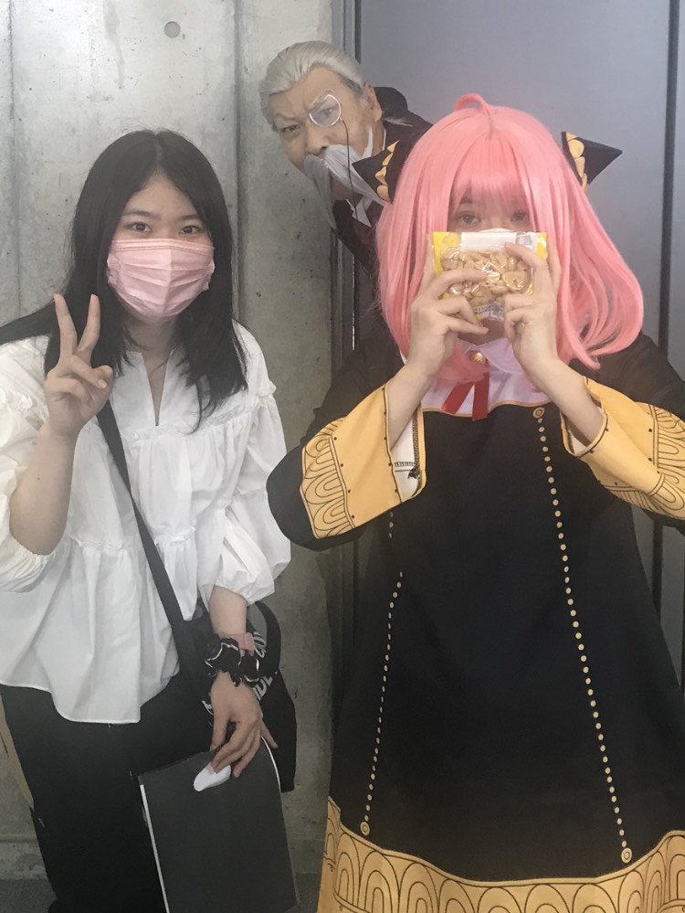
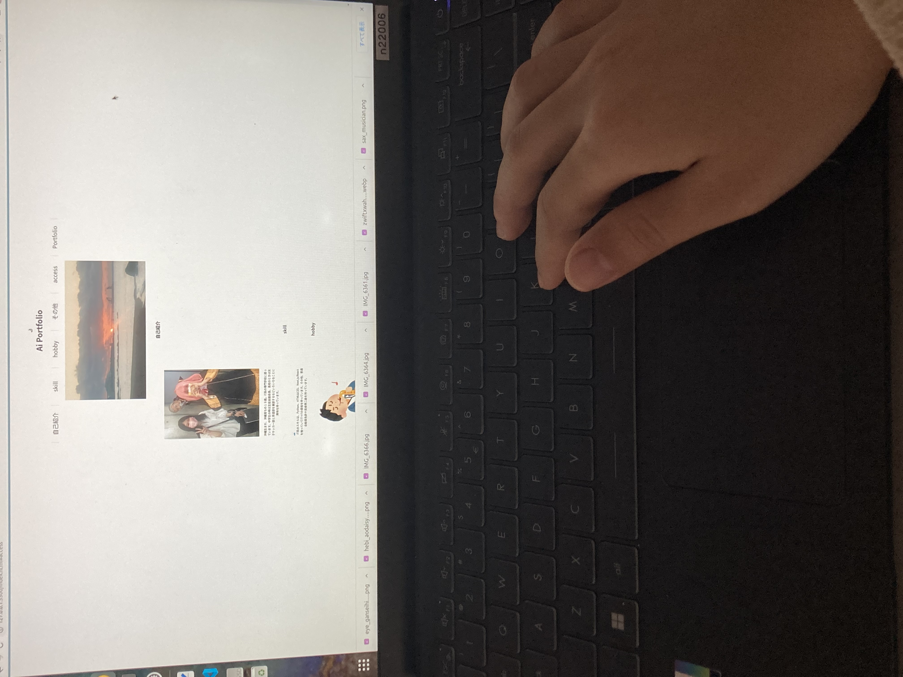
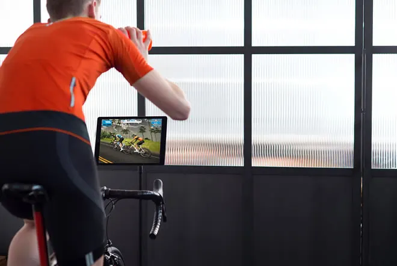
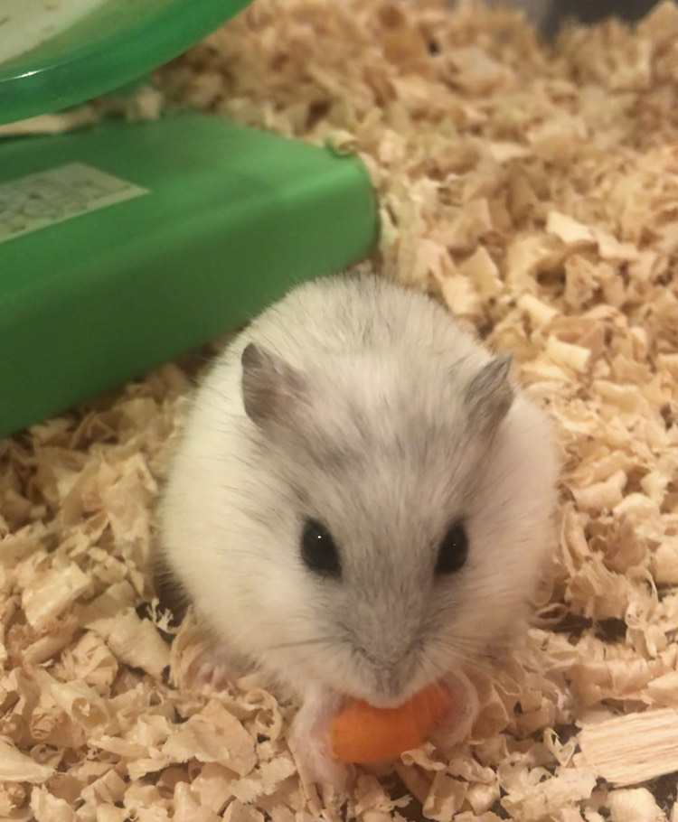
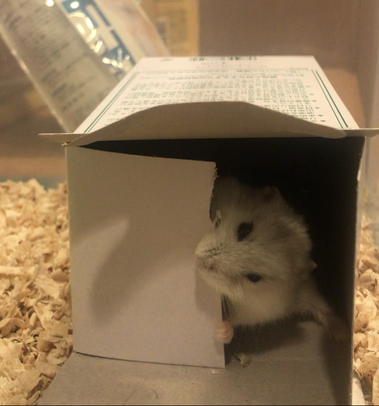
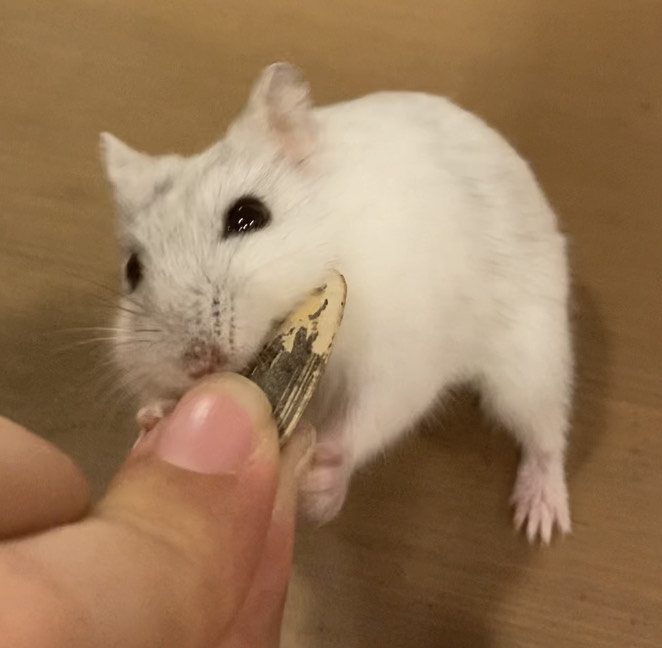

自己紹介

沖縄生まれ、沖縄育ちの１９歳。IT系の専門学校に通っています。中学生の時は生徒会副会長、高校のときは女子サッカー部と茶道部を兼部するなどいろいろなことに興味を持っています。
skill

IT系のスキルは、Python、HTML&CSS、Next.js/Reactを触っていてIT＋Fの資格を持っています。その他、普通自動車免許や英検準二級を持っています。
hobby
楽器
中学生の時に吹奏楽部でサックスに出会い、今でも続けていて、小さなカフェで演奏したこともあります。中学生の頃は、一人でステージに上がることもありましたが、現在は５人グループで活動していて自分が一番年下なので緊張せず楽しく吹いています。
続きはこちら

自転車
zwiftというEスポーツをやっています。始めたきっかけは父親が先に見つけて家でサイクリングし始めたということがきっかけですが、今では私もハマって２日に一回は３０分以上漕いでます。自分のアバターが、色々のコースを自分と同じ速度で走り去るので爽快感があります。
続きはこちら
その他



ペットと触れ合うこと
ハムスターを飼育しています。去年の６月に自動車練習学校で仮免許をとったときの自分へのご褒美で飼い始めました。種類はジャンガリアンハムスターのスノーホワイトで、本来人間に懐かず噛んだりする中型ハムスターですがペットショップにいたときから天然なところがあり、手を出すとなめてきます。今までも３匹ハムスターを飼っていますが、こんなに噛まないで触ることのできるハムスターは初めてなので、みなさんもハムスターを飼う機会があったときは、ハムスターを選ぶ前に一度触れ合ってみて性格を見て選んでお家にお出迎えすることをおすすめします。
続きはこちら
access
Portfolio